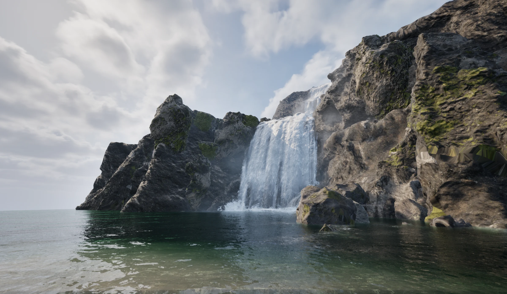
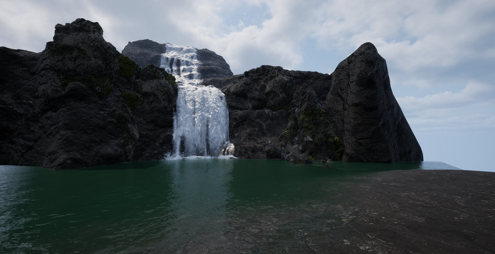
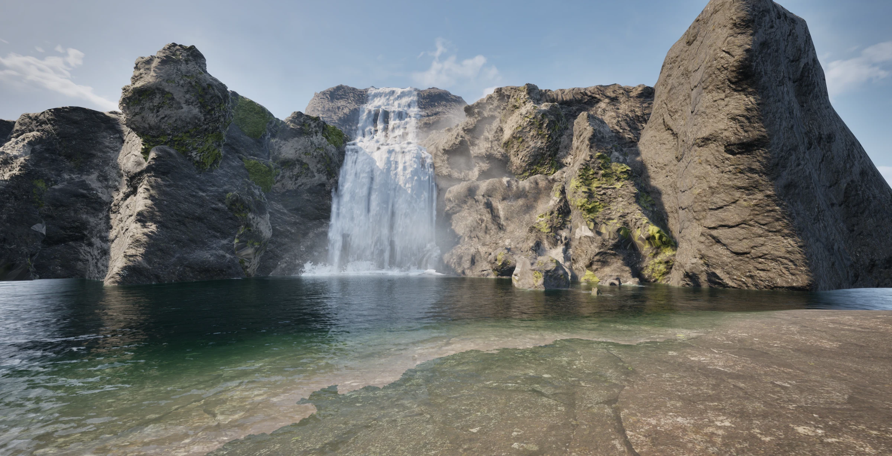

TECHNICAL ART PORTFOLIO / 2024—2026
胡洺滔技术美术作品集
从实时画面到资产生产流程。这里展示我在植被优化、程序化工具、材质与光照，以及 AIGC 评测方向的实践。

01 / SELECTED WORK
风格化植被优化
与生产提效
Houdini / Unreal Engine / 3ds Max
围绕树冠体积感、中远景 LOD 和资产生产效率，梳理 AO 烘焙与面片生成流程。
接手项目植被优化，分析并复现参考树木的 AO 烘焙方法，指导美术生产。使用 Houdini 从 LOD1 数据生成 LOD2，减少重复手工制作。
02 / SELECTED WORK
瀑布场景复现
RenderDoc / Houdini / Unreal Engine
基于《死亡搁浅》的场景与材质研究进行个人练习，串联面片生成、材质拆解与引擎中的光照调整。
使用 RenderDoc 研究参考效果，复现场景资产与瀑布面片生成方法。调整光照、曝光和雾气，让迎光与背光方向保留可读细节。
性质：个人学习与复现练习。


展开面片生成与光照思路
光照流程：先设置符合物理尺度的光照参数并确定表现主体，使用自动曝光测光，再固定手动曝光。根据场景需要调整曝光补偿曲线和雾气。
03 / SELECTED WORK
程序化建筑与关卡
BDF / Unreal Engine PCG / Houdini 协作
在 Ancient City 项目中制作可配置建筑资产，并参与元梦资产的迁移 Demo，验证工具在不同美术风格下的使用。
制作项目约 60% 的 BDF 资产，向编辑器开发同学反馈使用问题。在元梦 Demo 中筛选资产，负责美术效果、表现逻辑与部分配饰的 UE PCG 制作。
协作边界：同事提供 Houdini 部分支持。
04 / SELECTED WORK
水体效果
Unreal Engine / 实时渲染
包含 Ancient City 河流，以及元梦奇迹之岛的水面和水下效果。
作品展示：AC 河流、元梦奇迹之岛水体效果。奇迹之岛水体已上线。
05 / SELECTED WORK
手电筒组件改造
元梦 ChestPVE / Unreal Engine
场景中的手电筒组件改造效果，展示光束在室内环境中的实际表现。
作品展示：元梦 ChestPVE 手电筒组件改造。
06 / SELECTED WORK
Qualis 3D
AIGC / 3D 评测平台
AIGC 评测平台的界面与交互演示。
作品展示：Qualis 3D 评测平台。
TECHNICAL NOTES
技术笔记
01风格化树木分析
LOD 规范、插片与 Billboard、AO 烘焙、法线处理。
Houdini LOD2 制作流程
UE 资产导出、Houdini 操作、AO 传递与参数说明。
手电筒双锥衰减改造
方案对比、交互衰减曲线与 Shader 参数传递。